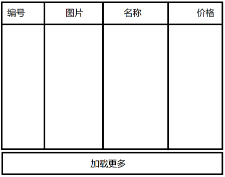
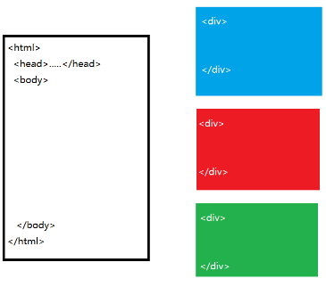

01.TypeScript知识点——强类型语言
1.类型声明：
class Book{
price: number = 1.5
author: any = 'Tom'
work( tool: number[] ): void{
}
}
2.接口：是一种特殊的class，用于规定一个class必须提供特定的方法
interface Runnable{
run()
stop()
}
class Car implements Runnable{
run(){ }
stop(){ }
}
3.类成员(属性/方法)的访问修饰符
① private：私有成员，只能在当前类内部使用；class中的属性一般都应该声明为私有的或被保护的！
② protected：被保护的，只能在当前类内部以及子类中使用
③ public：默认值！公共成员，可以被任何类使用；class中的方法一般声明为公共的！
4.类属性的声明/赋值方式
class Book{
private price: number = 0
public constructor( price: number ){
this.price = price
}
}
----------------------------------------------------
上面的代码可以简写为：
class Book{
//构造方法中的形参前加private/protected/public此形参自动变为一个同名属性，且自动赋值
public constructor( private price: number ){
//此处无需写 this.price = price
}
}
var book1 = new Book( 100 )
02.复习
父组件给子组件传递数据： Props Down
parent.component.html:
< h1 >这里是父组件< /h1 >
< app-child [uname]="parentName" >< /app-child >
parent.component.ts:
parentName: '父亲的名称'
------------------------------------------------
child.component.ts:
@Input( )
private uname: string
子组件给父组件传递数据： Events Up
parent.component.html:
< h1 >这里是父组件< /h1 >
< app-child (childEvent)="doChildEvent($event)" >< /app-child >
parent.component.ts:
doChildEvent( data ){ ... }
------------------------------------------------
child.component.ts:
private childName: string = '孩子的名称'
@Ouput()
private childEvent = new EventEmitter()
doClick(){
this.childEvent.emit( this.childName )
}
1.Angular核心概念之六 —— 服务和DI
Component：负责视图的数据绑定/事件处理
Service：负责从组件中剥离的与视图无关的任务，如日志、计时、网络访问....
注意：Angular中的依赖注入是基于构造方法的参数类型，而与先后顺序无关
创建服务：
@Injectable( {
//可以被注入给某个组件
//Injector/Provider：注入器/服务提供者，负责创建服务对象并注入给组件，Angular会自动为每个服务创建必需的注入器
} )
export class LoggerService{
}
面试题：Angular中的Service可以在哪里被提供/Service的提供者/注入器有哪些？
方式1：声明服务时提供——根模块中提供的服务对象是整个应用中“单例的”
@Injectable({
providedIn: 'root'
})
export class LoggerService{ }
方式2：在模块中提供——在当前模块中的所有组件共用同一个服务对象
@Injectable()
@NgModule({
providers: [ LoggerService ]
})
方式3：在组件声明中提供——该服务仅能作用于当前组件，且每个组件都有自己专有的服务对象
@Component({
selector: 'app-myc01',
template: ' ',
providers: [ LoggerService ]
})
面试题：前端技术中有哪些异步请求方案？
(1)原生XHR： 1234
(2)jQuery封装： $.ajax( ) 基于回调函数=>回调地狱
(3)Axios：底层还是XHR，基于Promise，可以避免回调地狱
(4)Angular HttpClient服务：底层还是XHR，基于Observable
(5)ES2016新方案：Fetch：底层不是XHR！就是fetch对象！不支持请求打断、请求排队！
2.Angular中异步请求服务器端数据
HTTPClient Service：是Angular官方提供的异步请求工具
使用步骤：
(1)在主模块中引入HttpClientModule——会提供HttpClient服务的注入器
@NgModule({
imports: [ HttpClientModule ]
})
(2)在需要使用异步请求模块中声明依赖HttpClient服务
constructor(private http: HttpClient){}
(3)调用HttpClient提供的异步数据请求服务
this.http.get( )
this.http.post( )
this.http.put( )
this.http.delete( )
马走日象走田 => 双炮枪等招数
JS语言基础语法 => JS设计模式(23+1)
3.Rx.js和Observable对象
Angular中HttpClient服务底层基于Rx.js第三方模块
官方：RxJS 是 Reactive Extensions for JavaScript 的缩写，是一个基于可观测数据流在异步编程应用库。RxJS 是 Reactive Extensions 在 JavaScript 上的实现。一般说到RxJS，都会讲他是基于流的响应式的结合观察者和迭代器模式的一种库。
Observer观察者模式（也称为“订阅-发布”模式）：
乙方声明“订阅(subscribe)”甲方；
在未来的某个不确定时间，甲方“发布(publish)”新消息，乙方会立即接到通知。
HttpClient服务采用了“观察者/订阅-发布模式”，其最核心对象为：
let obj = new Observable( ); //可被观察的对象
//可以关注/订阅“可被观察的”对象
obj.subscribe( ( )=>{ //收到订阅消息时的回调函数 } )
练习：创建组件：ProductList，点击“加载更多”则异步请求更多数据，呈现在表格中

4.Angular中组件的声明周期钩子函数
Hooks Function：声明好的特定的函数，到了指定的时间点，就会被自动执行
LifeCycle Hooks Function：在组件的不同生命阶段会自动执行的函数
面试题：Angular中组件的生命周期钩子函数按顺序有：
(0)constructor( )：构造方法，执行且仅执行一次
(1)ngOnChanges( )：组件的输入属性值发生赋值或改变
(2)ngOnInit( )：组件正在初始化，一般用于组件刚加载完成时执行的业务操作，如获取页面数据；执行且仅执行一次
(3)ngDoCheck( )：组件正在执行变化检查
(4)ngAfterContentInit( )：组件内容初始化之后
(5)ngAfterContentChecked()：组件内容被重新检查后
(6)ngAfterViewInit( )：组件视图初始化之后
(7)ngAfterViewChecked()：组件视图被重新检查后
(8)ngOnDestroy( )：组件即将从DOM树上销毁，用于释放定时器、取消订阅...执行且仅执行一次
5.Angular核心概念之七 —— 路由和SPA应用
Single Page Application，单页应用——整个应用中只有一个完整的HTML页面，其它所有的“页面”其实都是一段HTML片段

SPA应用的优点：
(1)DOM树只需要创建一次，“页面切换”只是在切换部分元素
(2)便于实现“过场动画”——多页应用不可能做到
SPA应用的不足：
(1)不便于实现SEO优化
SPA应用的核心——路由词典(把一个地址和一个组件对应起来)：
[
{ path: 'index', component: ...}
{ path: 'product/list', component: ...}
{ path: 'user/login', component: ...}
.....
]
SPA应用的原理：框架根据客户端请求的路由地址，异步加载对应的组件内容，替换之前的组件内容。
使用Angular中的路由步骤：
(0)提前准备好路由组件
ng g component index
ng g component productList
ng g component productDetail
(1)在根模块中创建路由词典
var routes = [ {path:'product/list', component: ...} ]
(2)在根模块引入路由模块，注册路由词典
@NgModule({
imports: [ RouterModule.forRoot(routes) ]
})
(3)在根组件的模板中声明路由组件的占位符
< router-outlet >< /router-outlet >
(4)让客户端请求路由地址
http://127.0.0.1:4200/product/list
6.课后任务
(1)比较Vue.js和Angular中的声明周期钩子函数
(2)比较Vue.js和Angular中的路由的使用过程
(3)查手册，查找Angluar中的如下问题的实现方法：
①默认路由和404路由
②路由跳转
③路由传参
④路由嵌套